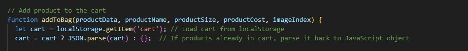
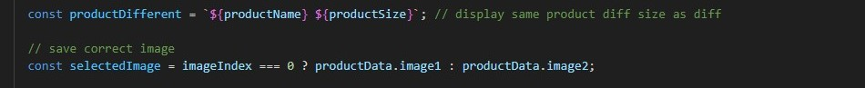
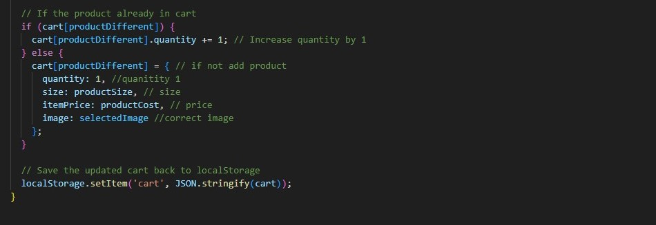
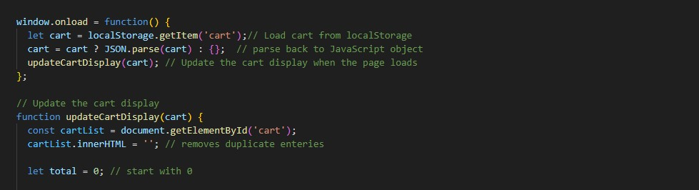
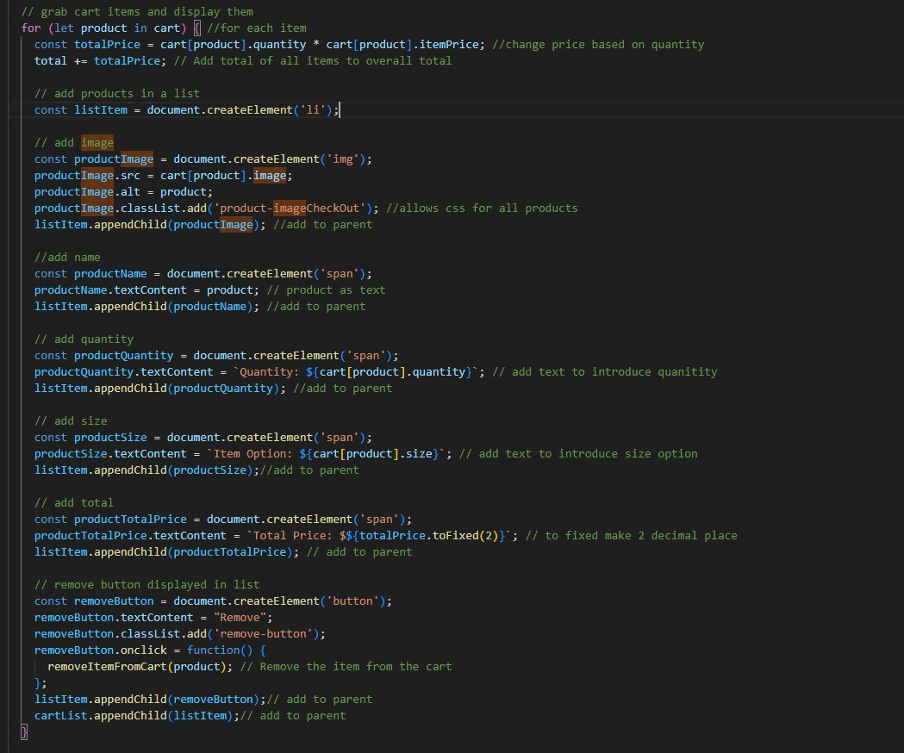
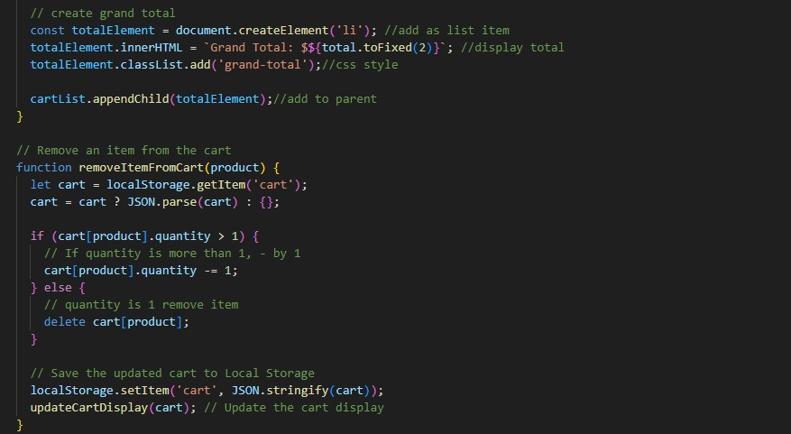

Adding products to cart starts on the product#.html, AKA product.js
Function addToBag grabs product information from products.JSON when the product size is selected.
productData: object holding product values
productName: Name value
productSize: Size value based on button selected
productCost: Cost value based on button selected
imageIndex: index that determines which photo to log
The cart is then loaded from localStorage, if item has perviously been added, it is parsed back into an object.
productDifferent will add the same product but in different sizes as seperate items in the cart (ex Coffee Small and Coffee Large will both appear)
selectedImage makes sure the correct image is stored in log, if imageIndex = 0 (default image) use image1
If the selected product is already in cart, the quantity will increase by one,
rather than it appearing as seperate in cart
If item is not in cart, the product will be saved as:
quantity:1
size: productSize
itemPrice: productCost
image: selectedImage
Product is now added to the local storage
The Product info can now be accessed on ShoppingCart.html
When page loads, stored product info is displayed in dynamic form
display is updated if user went back to add more items in cart, adding upon previous selections
old entries are removed, and total is set to 0, which will hold the total value by the end
Loop through all products in cart
Price is calculated by grabbing quantity of item and mulitplying by price
total price of products is added to cart total creating the overall cost
Product information is then grouped as list items to be displayed in the form
Remove item button is added to each product row
Grand total is added as a list item on its own row
Remove item button will remove product completely if quantity is 1, but lowers count by 1 is more than 1 is in cart
Cart is updated after item removed